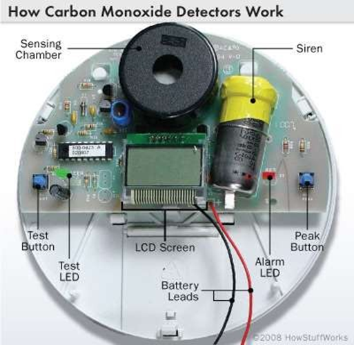

Carbon monoxide is a dangerous by-product of a malfunctioning water heater, kerosene heater, coal boiler, or any other wood, coal, or petroleum product unit. (It is also the most critical toxic gas generated in any structural fire).
There have been tragic incidents in which carbon monoxide from such units has resulted in the death of a guest or staff. Since carbon monoxide is invisible and has no smell, it cannot be detected by natural means.

Carbon monoxide is a dangerous by-product of a malfunctioning water heater, kerosene heater, coal boiler, or any other wood, coal, or petroleum product unit. (It is also the most critical toxic gas generated in any structural fire).
There have been tragic incidents in which carbon monoxide from such units has resulted in the death of a guest or staff. Since carbon monoxide is invisible and has no smell, it cannot be detected by natural means